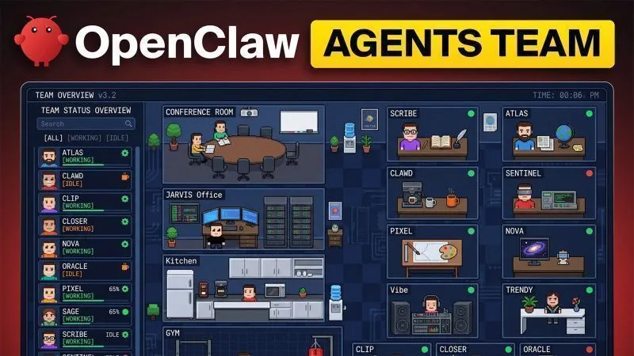

Running a company on $400 a month with OpenClaw Agents
Originally posted on LinkedIn, March 26, 2026.
OpenClaw Agents can run an entire company for $400 a month. The setup starts with Jarvis, which handles Task Routing based on the job, from sending YouTube content to Clipper to routing a Research Report to Scribe.
Opus 4.6 and Atlas conduct deep research across Reddit, X, and the web. Scribe uses GLM 5 to write posts in the founder’s style, while Trendy identifies hot topics to keep the content current.
For visual work, Google’s Nano Banana Pro creates images on demand, and Clipper handles video with automatic captions. On the development side, Clawed reviews the code every night and opens Pull Requests, while Sentinel keeps everything organized and secure.
Running a business on a budget this small is the challenge everyone is tackling now. It is already possible. The full setup is in the original post.
